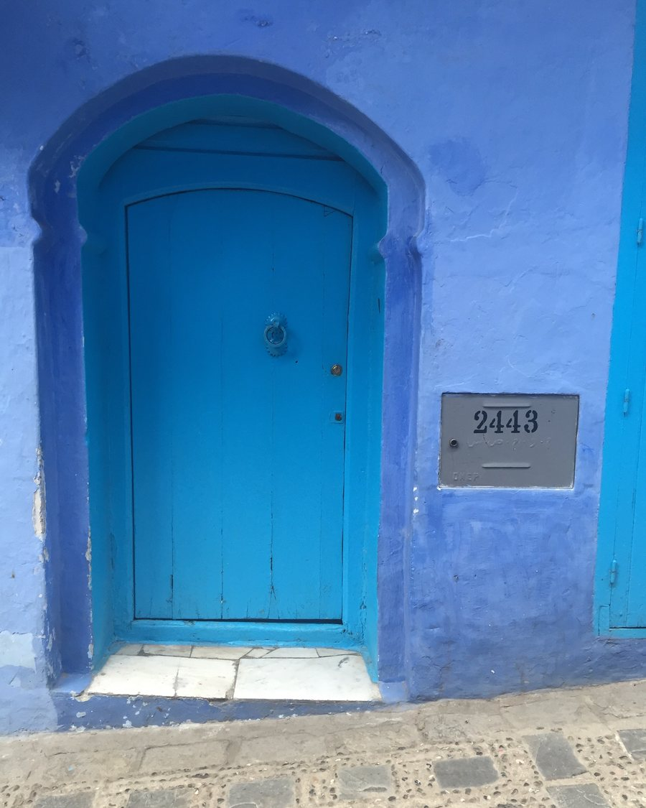

Certain Latitude◆First journey, March 2027
You’ve earned the latitude.
Now use it.
Welcome to Certain Latitude. We curate global adventures for women who crave the wonder and awe of travel. Bring your stories to share with those we meet along the way, and come home bursting with new perspectives to broaden your world view.

Who we are
Designed for your next act
We are a travel company dedicated to women embarking upon our next act — a season of freedom, curiosity, and possibility. While it’s already been a wild ride, our best adventures are yet to come with others who share our zest for life and crave the magic of exploring new places.
While we may not be clubbing like the 20-somethings, we can enjoy nights out with deliciously long conversations over dinner, toasting our newly expanding latitude to explore the world.
Join us to experience new destinations that open up our hearts as we connect with one another and stretch our minds together.
What to expect
Structure, and room around it
Each Certain Latitude journey brings together a group of 10–14 women, ages 40s–60s, who are ready for adventure.
Our itineraries blend thoughtfully structured time together — shared meals, guided experiences, and cultural immersion — with unstructured time to wander through the storied old cities and get lost in conversation.
- 10–14 travelers, roughly ages 40s–60s
- Shared meals and curated daily highlights
- Each day filled with a joyful mix of activity and rest
- Sit together on the road or rail and connect with new friends
Nicole is a world traveler and writer with more than two decades of experience teaching global history — and a lifetime of experiencing it firsthand across dozens of countries.
Certain Latitude is a natural blend of Nicole’s passions: for the transformative power of travel, the ways history shapes our understanding of modern culture, and the deep connections women forge when they experience the world side by side.
Where we’re going
Upcoming journeys
Latitude is the line you are standing on. Ours run from the Rif Mountains to the Río de la Plata, with the Silk Road in between.
Up first
Morocco — March 7–18, 2027
We open in Tangier during the Eid al-Fitr holidays, when the medina is at its most festive, and twelve days later delight in the aromatic wonders of street food chefs in the storied Jemaa el-Fna. In between: the blue city, the oldest university in the world, a cedar forest full of macaques, and copious amounts of sweet Moroccan mint tea.
- Dates
- Mar 7–18Alt 7-Day option ends 3/16
- Cities
- SixPlus a night in Paris en route
- Group
- 10–14Ages 40s–60s
- Longest drive
- 4 hoursTwo legs by first-class rail
- Pace
- WalkableGentle hikes, no boots required
How we travel
What makes us stand out
Our itineraries are personally vetted to ensure we are staying in accommodations that are comfortable but unpretentious, always centrally situated and full of local flair, and days built at a pace you can actually enjoy.
- 10–14 travelers, ages 40s–60s. A cozy group that fits around one long dining table for shared conversations.
- We sleep inside the old cities, with a focus on small family-owned hotels that feel like part of the neighborhood rather than Western chains.
- Our time on the road will not exceed four hours on a single day, and will take advantage of high speed rail where available.
- Daily agendas with flexibility to either get more steps or sit and enjoy an afternoon coffee and pastry.
- We will dine in carefully chosen restaurants with local specialties and accommodations for all dietary needs.
- Most travelers will come on their own, but do invite friends to join us too!
The interest list